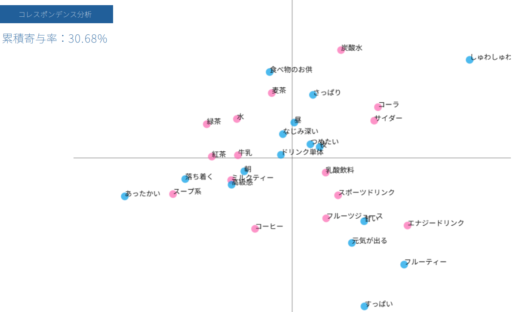
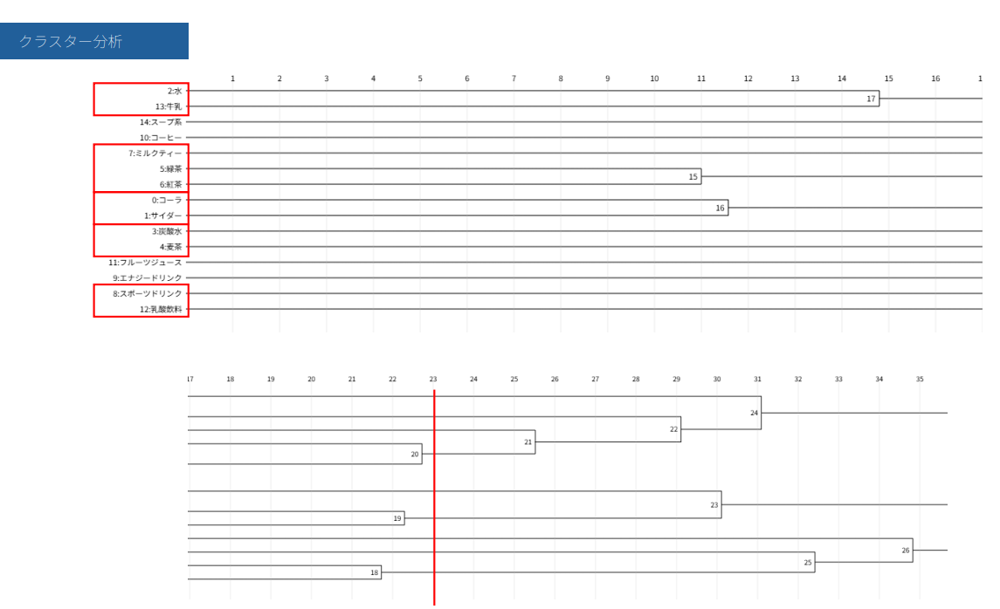

ポジショニング分析
2025/5/14
【コレスポンデンス分析】
今回の授業では、コレスポンデンス分析を行いました！
分析のテーマは「飲み物」で、様々な飲み物を、「イメージ」
で分析してみました！
分析結果↓

そのデータをどれくらい正確に表しているかを示す、
累積寄与率は約30％でしたが、ぱっと見た感じではある程度
イメージ通りの結果になっていてびっくりしました。
その反面、自販機やスーパーに売っている飲み物から項目を
作った影響か、”冷たい”や”馴染み深い”が中央にまとまって
しまいました。「飲み物」よりも、「炭酸飲料」などのジャンル
に絞って、より違いがでる「イメージ」を選べば、もっと寄与率は
上がるかもしれません。
【クラスター分析】
まずは結果から。↓

自分たちは、23で線を引きました。そうすると、お茶系と炭酸系をある程度
まとめることができます。これに関しては、各々の好みも分かれると思います。
欲を言えば、水は独立していて、牛乳はミルクティーの近くに、麦茶をお茶系に、
スポーツドリンクと乳酸飲料はそれぞれ独立させたかったです。
原因は、水と牛乳、スポドリと乳酸飲料はどれも中央に近く、今回の項目からでは
目立った特徴が当てはまらなかったと考えられます。麦茶に関しては、他のお茶系
が”落ち着く”や”高級感”に引き寄せられている分、炭酸水寄りになってしまったの
だと考えられます。
これは、自分たちの班が「麦茶は別に高級感や落ち着くイメージが無い」という暗の
共通点があったためであるとも言えます。
総評としては、たった4人の班のイメージだけでCSVファイルを作成したとしても
ある程度キレイに結果が出ていてびっくりしたのと同時に、とても面白かったです！
実際の調査同様に、より多くの、より様々な年代の人たちにアンケートを取ったら
どこまで結果が変わってくるのか気になりました！！
【使用ファイル】
ダウンロードはこちら